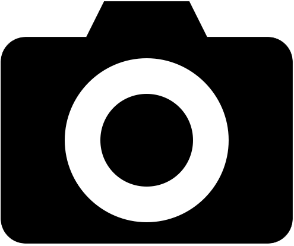

<!DOCTYPE html>
<html>
<head>
<meta charset="UTF-8">
<meta name="viewport" content="width=device-width, initial-scale=1.0, minimum-scale=1.0, maximum-scale=1.0, user-scalable=no"/>
<title>Insert title here</title>
<link rel="stylesheet" href="https://maxcdn.bootstrapcdn.com/bootstrap/4.0.0/css/bootstrap.min.css" integrity="sha384-Gn5384xqQ1aoWXA+058RXPxPg6fy4IWvTNh0E263XmFcJlSAwiGgFAW/dAiS6JXm" crossorigin="anonymous">
<script src="./js/jquery-3.4.1.min.js"></script>
<script type="text/javascript" src="https://openapi.map.naver.com/openapi/v3/maps.js?ncpClientId=ufu00uecjo"></script>

<style>
@import "compass/css3";

html,
body{
	width:100%;
	height:100%;
}
.circle {
  background: red;
  width: 85px;
  height: 85px;
  margin: auto;
  border-radius: 100%;
  overflow: hidden;
}
.circle {
  -webkit-animation:grow 2.8s infinite;
}
@-webkit-keyframes grow {
 0% {
-webkit-transform: scale( 0.2 );-moz-transform: scale( 0 .2);-o-transform: scale( 0.2 );-ms-transform: scale( 0.2 );transform: scale( 0.2 );
  } 
  50% {
  -webkit-transform: scale( 0.14 );-moz-transform: scale( 0.14 );-o-transform: scale( 0.14 );-ms-transform: scale( 0.14 );transform: scale( 0.14 );
  }  
  100% {
  -webkit-transform: scale( 0.2);-moz-transform: scale( 0.2 );-o-transform: scale( 0.2 );-ms-transform: scale( 0.2 );transform: scale( 0.2 );
  }
}
.camIcon{
	width:60px;
	position:absolute;
	bottom:75px;
	right:34px;
}
#img{
	display:none;
}
.image-box{
	width:100%;
	height:999px;
	background:rgba(0,0,0,0.5);
	padding-top:80px;
	z-index:2;
	position:relative;
	display:none;
}
.uploadImg{
	max-width:100%;
	max-height:100%;
	height:auto;
}
.imgContainer{
	width:316px;
	margin:0 auto;
	border:3px solid yellow;
	height:300px;
	line-height:285px;
	text-align:center;
}
.imgContainer>*{
	vertical-align:middle;
}
.btn-box{
	text-align:center;
	margin-top:57px;
}
.marSpan{
	margin:38px;
}
#map{
	z-index:1;
}

</style>
</head>
<body>
<!-- <form action="http://localhost:8080/project/fileUpload.jsp" method="post" enctype="multipart/form-data">
		<input type="file" name="img" accept="image/*" id="img"></form> -->
<div id="map" style="width:100%;height:100%;">
<div class="image-box">
</div>
</div>

<script>

$(window).on("load", function() {
	
	/* var locationBtnHtml = '<form action="http://localhost:8080/project/fileUpload.jsp" method="post" enctype="multipart/form-data"> \n'
								+ '<label for="img"></label> \n'
								+ '<input type="file" name="img" accept="image/*" id="img"></form>'; */
	 var locationBtnHtml = '<form action="http://54.180.24.137:8080/project/fileUpload.jsp" method="post" enctype="multipart/form-data"> \n'
								+ '<label for="img"></label> \n'
								+ '<input type="file" name="img" accept="image/*" id="img"></form>'; 
	
	function readURL(input) {
	    if (input.files && input.files[0]) {
	    var reader = new FileReader();

	    reader.onload = function (e) {
	    		$(".image-box").html('<div id="uploadBox"><div class="imgContainer"></div>'+
	    									'<div class="btn-box"><button id="cancelUp" class="btn btn-danger btn-lg">취소</button><span class="marSpan"></span><button class="btn btn-primary btn-lg">확인</button></div></div>');
	    		var cancelUp = document.getElementById('cancelUp');
	    		cancelUp.addEventListener('click', function(event){
	    	        $("#uploadBox").remove();
	    	        document.getElementsByClassName("image-box")[0].style.display="none";
	    	    });
	        }

	      reader.readAsDataURL(input.files[0]);
	    }
	}
	
	var map = new naver.maps.Map('map', {
		zoom: 13,
		logoControlOptions: {
			position: naver.maps.Position.TOP_LEFT
			},
		scaleControlOptions: {
	        position: naver.maps.Position.TOP_RIGHT
	    }
		});

	naver.maps.Event.once(map, 'init_stylemap', function() {
	    //customControl 객체 이용하기
	    var customControl = new naver.maps.CustomControl(locationBtnHtml, {
	        position: naver.maps.Position.BOTTOM_RIGHT
	    });

	    customControl.setMap(map);

	    naver.maps.Event.addDOMListener(customControl.getElement(), 'change', function() {
	    	document.getElementsByClassName("image-box")[0].style.display="block";
	    	readURL(document.getElementById('img'));
	    	
	    	//navigator.geolocation.getCurrentPosition(onSuccessGeolocation2, onErrorGeolocation); 
	    });

	});
   
	function onSuccessGeolocation(position) {
		var location = new naver.maps.LatLng(position.coords.latitude, position.coords.longitude);

		    map.setCenter(location); // 얻은 좌표를 지도의 중심으로 설정합니다.
		    map.setZoom(18); // 지도의 줌 레벨을 변경합니다.

		}

		function onSuccessGeolocation2(position) {
			var location = new naver.maps.LatLng(position.coords.latitude, position.coords.longitude);

			    map.setCenter(location); // 얻은 좌표를 지도의 중심으로 설정합니다.
			}
			
		function onErrorGeolocation() {
		    var center = map.getCenter();

		    infowindow.setContent('<div style="padding:20px;">' +
		        '<h5 style="margin-bottom:5px;color:#f00;">Geolocation failed!</h5>'+ "latitude: "+ center.lat() +"<br />longitude: "+ center.lng() +'</div>');

		    infowindow.open(map, center);
		}
		    if (navigator.geolocation) {
		    	
		    	navigator.geolocation.getCurrentPosition(onSuccessGeolocation, onErrorGeolocation);       
		         navigator.geolocation.watchPosition(
		                 function(position) {
		                	 var location = new naver.maps.LatLng(position.coords.latitude,
		                             position.coords.longitude);
		                	 if(document.getElementById("circle")){
		                		 document.getElementById("circle").remove();
		                	 }
		               	 	//map.setCenter(location); // 얻은 좌표를 지도의 중심으로 설정합니다.
							//map.setZoom(18); // 지도의 줌 레벨을 변경합니다.
							
							var unarySpotMarker = new naver.maps.Marker({
						    position: location,
						    map: map,
						    icon: {
						        content: '<div id="circle" class="circle"></div>',
						       
						    }
		                 });
							//console.log('Coordinates: ' + location.toString());
							
		                     $('#latitude').html(position.coords.latitude);     // 위도 
		                     $('#longitude').html(position.coords.longitude); // 경도 
		                     
		                 });
		    } else {
		    	alert("오류");
		        var center = map.getCenter();
		        infowindow.setContent('<div style="padding:20px;"><h5 style="margin-bottom:5px;color:#f00;">Geolocation not supported</h5></div>');
		        infowindow.open(map, center);
		    }
		    
    
	
});


</script>

</body>
</html>